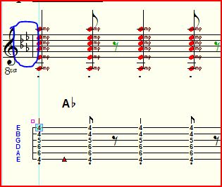

Lesson 5
Notes to Lesson 5
This is the first lesson where the student is asked to transpose the exercise to some of the orchestra keys that Mickey wants. This time, Lesson 5's task is to transpose the exercises of Lesson 4 which were in the key of G and we are asked to transpose each to F, Ab, and Bb. You'll notice that the prime example or the example in the key that Mickey has shown in the lesson has chord diagrams. All of the examples were in G from Lesson 4. These transposed lessons will just have chord names. If one has practiced Lesson 4, for at least a week, then it shouldn't be a chore to find the chords by name and music notation without the diagrams. I've followed this practice all through this course.
Therefore, I believe Lesson 5 is a "Milestone" lesson. It will be where most students begin to lose their fear of those terrible orchestra keys, like Ab and Bb.
For many taking this course, this lesson will be the first time that student has played in the keys of Ab and Bb, and maybe even F without a capo. But due to the philosophy of using moveable chords, it shortly becomes apparent that there is really very little difference in playing in any key from any other as long as we follow this philosophy. Also, many may have very little experience reading standard notation staves. I believe this is a very import skill and if we work on it just a little at every practice session, we soon become comfortable with standard notation. Start by learning the Key Signatures and where they are, such as F uses a Bb, Bb uses Bb and Eb, and Ab uses Bb, Eb, Ab, and Db.
Another exercise that will benefit the student is to write in the Roman Numerals for the chords in the keys as we discussed in Lesson 4. For example, in F, an F Maj7 chord is a IMaj7, and an F Maj6 is a I6 or IMaj6, and a C13b5b9 is a V13b5b9. You'll see that once you write this out for one key, the Roman Numerals remain the same in all the keys. This will help you learn transcribing and develop an ability to transpose "on the fly".
Toward the end of the week and you're comfortable "chunking" the chords in keys like Ab and Bb, let's practice our new found skills by doing what Jazz Drummer Buddy Rich used to call "High Head Arrangements". Transpose each exercise in your head to the key of our old friend, A Major--as you're playing along. By the time you got to Exercise 5, I'll wager you felt like you've been doing this all your life. Some folks actually have!
If you want to practice your TablEdit skills, try transposing the Ab TEF's to A Maj. A couple of transposing tips: First, save the Ab TEF as an A TEF before attempting anything. Using Example 1 also as our transposing example, we would save "Lesson5-Part 1-Ab.tef" as "Lesson 5-Part 1- A.tef".
With your cursor in the first measure, move it to over the key signatures and do a left click. Refer to the illustration where I've circled the key signature.

Location of the Key Signature
This will bring up the Key Signature window (refer to the next illustration.) Here we need to input two choices:
1. How many measures do we want of A Major? In our example we want all 12 to be in that key. Make sure the "From Measure" is "1", and the "To Measure" is "12". If we click on the little blue arrows to the right of those selections, it will select the extremes of the TEF. In our case we only need to click on the "To Measure" blue arrow. You can also manually type in those numbers. A quick tip is to highlight the measures we wish to change keys in BEFORE calling up the Key Signature Window and the To and From windows will give these numbers.
Key Signature Window
2. What key signature do we want? Just click on the little up arrow and the Key signatures will scroll to the desired signature, in this example, A with 3 sharps. Refer to the Key Signature Window illustration to see where I've highlighted the "up arrow". As you probably have guessed, the up arrow moves us in the direction of sharps, and the down arrow moves us toward flats. The names in the Mode section of the Key Signature Window change with each click of the up/down arrows, so we really don't have to worry about them.
Back in Measure one of each module, do a "control a" command and the entire module will highlight. Now do an "+" command (on my computers it's an upper case "="), and voila, the score's module moves one fret higher and is now in A Maj (just for that module.) Repeat those steps in module 2. All you have to do is to manually change the chords from Ab chords to A chords. You can do that by clicking on each text string, and manually editing it. Refer to the next illustration which depicts the "editing box" around the text after I clicked on it. In this example, we need to erase the flat symbol.

Text Editing Box
Want to know if you've made an error? Close your eyes and listen to the midi playback. By now, with your newly trained ear, any error will stand out like a drum solo. If you had typed a "-" instead of a "+", the module would have lowered by one fret. The "+" and "-" are great and useful tools in TablEdit as undoubtedly you're thinking right now. A tip I try to follow is to minimize the editing, I try to stay within the letter name, that is Ab to A is similar in effort as Bb to A (one is up 1 fret and the other is down one fret.) But with Ab's text editing, we only have to erase the "b" to make it A. You'll find Db to D, and Eb to E use the same logic as I just described.
There you have the secret to transposing in about 2 minutes! TablEdit, like most computer programs, has several ways to transpose and edit text, but for our purposes here, these two are, in my opinion, the easiest and fastest ways to do either.
If you want to send me your extra work, I'll add it to the online archive. If I receive 50 different participants' works of the same exercise, I'll give each credit in the Notes page of the TEF. Make sure you tell me if you want to be anonymous or want to "sign" your masterpiece.
Just keep it FUN!